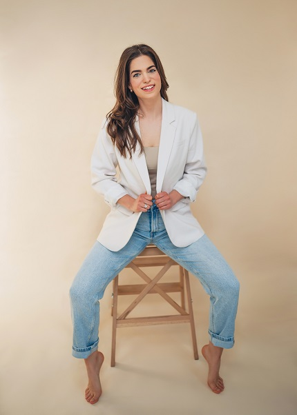

Támogasd a bőröd természetes szépségét minőségi, holisztikus szépségápolási rituálékkal
A természetes szépség mestere
Vannak álmok, amelyek csendben érlelődnek bennünk hosszú évekig, majd egyszer eljön a pillanat, amikor már nem lehet tovább halogatni őket. Amikor a szívünk hangosabb, mint a félelmeink. Amikor a vágyból valóság születik.
Tóth-Varga Dóra vagyok, kozmetikus és sminkes. Ez az én szerelem projektem, ez a vágyam, aminek most jött el az ideje. Sokat dolgoztam az álmaimért, kitartottam és most itt vagyok, létrehoztam a Doraan Skincare-t.
Kozmetikai vállalkozásomnak küldetése, célja van. Nem egyszerűen kozmetikai kezelések, hanem a bőrünk egészsége belülről kifelé. Ahogy arra is figyelünk, hogy mit eszünk meg, az sem mindegy, hogy mivel ápoljuk a bőrünket – tiszta, élő, természetes alapanyagokkal, a longevity szemlélet jegyében.
Küldetésem:
Itt nemcsak a bőröd újul meg, hanem te magad is megérkezel egy kicsit a csendbe és békébe. Nálam megáll egy pillanatra a rohanás, itt nyugalom van, figyelem és valódi feltöltődés a bőrápoláson túl.
Ha erre vágytok, szeretettel várlak benneteket, keressetek bizalommal.
Foglalj időpontot
Csak a legjobb minőségű, természetes összetevőket használom.
Minden kezelés személyre szabott, az te bőröd igényeire hangolva.
Fenntartható szépségápolás, a bőröd és a környezet iránt egyaránt.